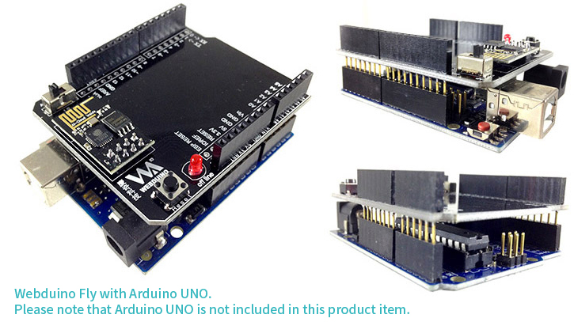

Webduino Fly (Wi-Fi Extension Board)
The Webduino Fly is an extension board for the Arduino UNO, which equips your UNO with Wi-Fi, facilitating the complete functions of the Webduino technology. Webduino is based on web development languages; therefore, controlling Arduino UNO with Webduino Fly is just easier than anything.
Price
US$ 25.99
Please send inquiries by email service@webduino.io or call +886-7-3388511.
Product Details
- 1. Wi-Fi module *1
- 2. Webduino Printed Circuit Board *1

Connect Webduino Fly to Arduino UNO as shown below.

Before you use:
The most important thing before you begin using the Webduino is setting up the Wi-Fi. The purpose of the setup is to make the Webduino Development boards connect to the internet automatically. Additionally, Webduino boards follow the Arduino Firmata protocol, so you will have to burn the standard firmware on them. Please check the tutorials as follows.
1. Webduino Fly Wi-Fi Setup
2. Arduino Firmware Download / Burn